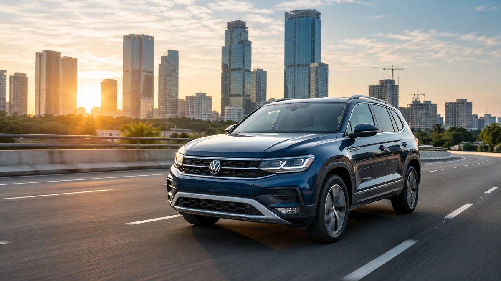

Automotive News
Volkswagen Is Betting Big on India Again—Here's Why
Volkswagen is preparing one of its most ambitious India offensives in years, committing to product interventions every quarter, expanding its premium portfolio, and evaluating future opportunities across hatchbacks, SUVs, exports, and electrification. The stra